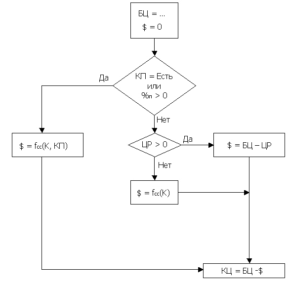

Конечная цена товара определяется как производное от базовой цены товара с учетом скидок на товар (см.менеждер скидок, распродаж или скидок, назначаемых в зависимости от категории покупателя (см.менеждер скидок, каталог покупателей).
С учетом изложенного, конечная цена товара будет определяться как производное возможных скидок следующим образом:

Где:
БЦ - базовая цена товара;
КЦ - конечная цена товара;
%п - индивидуальный процент покупателя, задается в Каталоге покупателей;
$ - сумма скидки на товар;
ЦР - цена распродажи товара;
КП - категория покупателя, задается в Каталоге покупателей;
К - заказываемое количество;
fcc - функция системы скидок, зависит от категории покупателя и количества заказываемого товара, подробнее в Менеджере скидок;
При этом следует иметь в виду, что скидки, назначаемые в зависимости от категории покупателя, или персональные скидки, назначенные покупателю, имеют приоритет над скидками на товар.